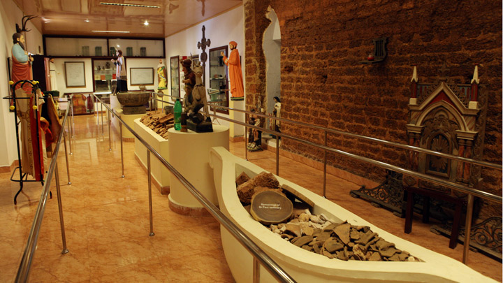
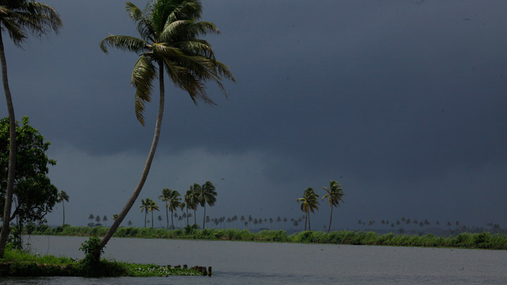
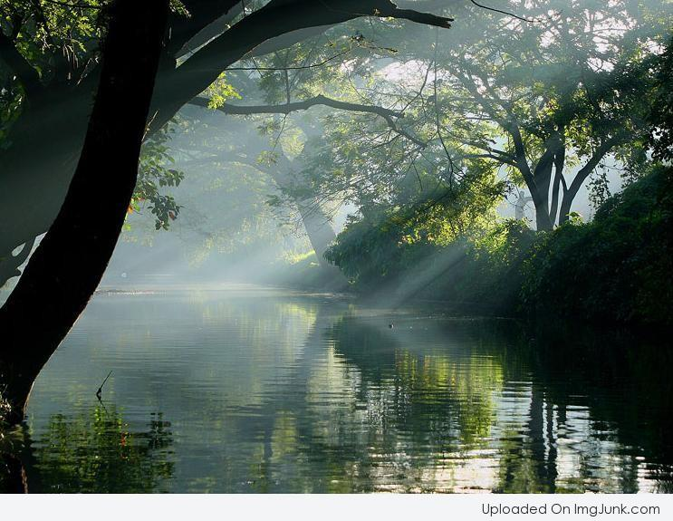
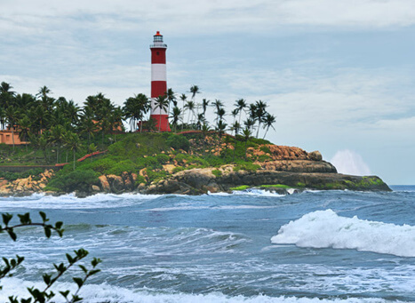

TOP DESTINATIONS
-

Sampalur Church
Near the banks of the Chalakudy River is Sampaloor, popularly described as the Goa of Kerala due to it bearing witness to the arrival of a series of clergy. St. Francis Xavier, St. John Britto, Fr. Joseph Constantine Buski (Veeramamunivar) and Arnos Pathiri are all eminent clergymen who arrived at Sampaloor, located in the district of Thrissur. The first to arrive among them was St. Francis Xavier, who came via Marankuzhi, a place located in Kodungalloor. According to records, his visits took place in 1542, 1544, and 1548. At that time the Muziris harbour (present day Kodungalloor) was the gateway connecting India to foreign lands. An important centre of the Jesuits priests during the reign of the Portuguese, Sampaloor still contains numerous monuments from that era. They include the St. Paul's Seminary, the St. Paul's Monastery and the St. Paul's Press and a church dedicated to St. Francis Xavier. The name Sampaloor itself finds its roots in San-paul-ur. Mid-17th century saw the arrival of St. John Britto, an Italian missionary who adopted an Indian name - Swamy Arulananda. The altar of St. Francis Xavier's church at which St. John Britto used to celebrate the holy mass is now a protected historical monument. The next member of the clergy who played a prominent role in the history of Sampaloor was Arnos Pathiri, who studied at the St. Paul's Seminary and later got ordained there.He made remarkable contributions to Malayalam literature through his book 'Puthen Pana'. In his footsteps followed Fr. Joseph Constantine Buski (Veeramamunivar) who came to Sampaloor, while serving in the Madurai Mission and was later laid to rest here.
-

Q, S, T and R Block Kayal
If the very own 'Rice Bowl of Kerala' cannot inject its rustic charm into your heart, nothing else on the planet ever will. Kuttanad is regularly listed among the must-visit destinations in our country and here lies its pristine Q, S, T & R Block Kayals (backwaters). Here, the famous dikes of the Dutch seem to appear out of nowhere. They are the popular flood control system seen all the way around in Europe. With much effort and ingenuity, extensive land has been reclaimed from the backwaters and is protected by dikes built around it. Accessible only by boat, it hosts a wide variety of Snake Boat Races and a cruise here is considered among the finest that God’s Own Country has on offer.
-

Krishnapuram Palace
The 'Gajendra Moksham' is a massive mural depicting an elephant saluting Lord Vishnu as the other Gods, Goddesses and sages look on in reverence. At 49 sq m, this largest single mural band of its kind ever found in Kerala, greets all who visit Krishnapuram Palace. It is said that Lord Vishnu was the chief deity of theerst while Kayamkulam royal family. This mural was placed at the entrance to the palace from the pond to enable the rulers to worship the deity after their bath. The Krishnapuram Palace is a rare specimen of the Kerala style of architecture, complete with gabled roofs, narrow corridors and dormer windows. Residence of the rulers of Kayamkulam Kingdom, the age of the palace is unknown. Renovated in the 18th century, the palace is today a protected monument under the Archaeology Department. Recently it was again renovated according to the scientific techniques prescribed for the protection of heritage buildings. One can come across many rare antiques and paintings when exploring this beautiful palace.
-

Pathiramanal
Pathiramanal is a small island inMuhamma panchayat of Alappuzha district. The name Pathiramanal means 'midnight sand'. The scenic beauty of both sides of the lake as well as that of the island is mind blowing. It is home to many rare varieties of migratory birds from different parts of the world
-

Alappuzha Lighthouse
The Alappuzha Lighthouse is situated in the coastal town of Alappuzha, Kerala. It was built in 1862 and is a major tourist attraction. Visitors are allowed between 1500 hours and 1630 hours on every weekday at an admission fee of 20 rupees for Indian citizens and 50 rupees for foreigners. This is the first of its kind in the Arabian sea coast of Kerala